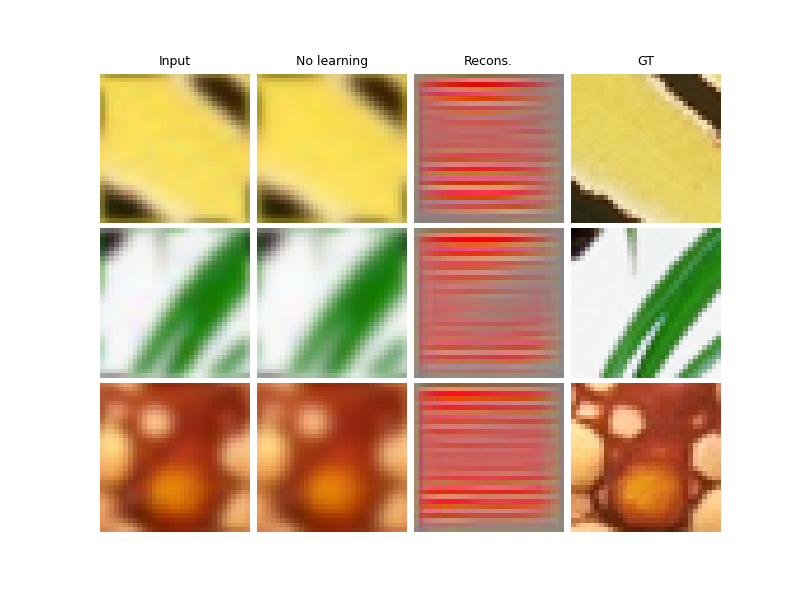

Note
Go to the end to download the full example code
Deep Equilibrium (DEQ) algorithms for image deblurring
This a toy example to show you how to use DEQ to solve a deblurring problem.
Note that this is a small dataset for training. For optimal results, use a larger dataset.
For visualizing the training, you can use Weight&Bias (wandb) by setting wandb_vis=True.
For now DEQ is only possible with PGD, HQS and GD optimization algorithms.
import deepinv as dinv
from pathlib import Path
import torch
from torch.utils.data import DataLoader
from deepinv.models import DnCNN
from deepinv.optim.data_fidelity import L2
from deepinv.optim.prior import PnP
from deepinv.unfolded import DEQ_builder
from deepinv.training_utils import train, test
from torchvision import transforms
from deepinv.utils.demo import load_dataset
Setup paths for data loading and results.
BASE_DIR = Path(".")
ORIGINAL_DATA_DIR = BASE_DIR / "datasets"
DATA_DIR = BASE_DIR / "measurements"
RESULTS_DIR = BASE_DIR / "results"
CKPT_DIR = BASE_DIR / "ckpts"
# Set the global random seed from pytorch to ensure reproducibility of the example.
torch.manual_seed(0)
device = dinv.utils.get_freer_gpu() if torch.cuda.is_available() else "cpu"
Load base image datasets and degradation operators.
In this example, we use the CBSD500 dataset and the Set3C dataset for testing.
img_size = 32
n_channels = 3 # 3 for color images, 1 for gray-scale images
operation = "deblurring"
# For simplicity, we use a small dataset for training.
# To be replaced for optimal results. For example, you can use the larger "drunet" dataset.
train_dataset_name = "CBSD500"
test_dataset_name = "set3c"
# Generate training and evaluation datasets in HDF5 folders and load them.
test_transform = transforms.Compose(
[transforms.CenterCrop(img_size), transforms.ToTensor()]
)
train_transform = transforms.Compose(
[transforms.RandomCrop(img_size), transforms.ToTensor()]
)
train_base_dataset = load_dataset(
train_dataset_name, ORIGINAL_DATA_DIR, transform=train_transform
)
test_base_dataset = load_dataset(
test_dataset_name, ORIGINAL_DATA_DIR, transform=test_transform
)
Generate a dataset of low resolution images and load it.
We use the Downsampling class from the physics module to generate a dataset of low resolution images.
# Use parallel dataloader if using a GPU to fasten training, otherwise, as all computes are on CPU, use synchronous
# dataloading.
num_workers = 4 if torch.cuda.is_available() else 0
# Degradation parameters
noise_level_img = 0.03
# Generate the gaussian blur downsampling operator.
physics = dinv.physics.BlurFFT(
img_size=(n_channels, img_size, img_size),
filter=dinv.physics.blur.gaussian_blur(),
device=device,
noise_model=dinv.physics.GaussianNoise(sigma=noise_level_img),
)
my_dataset_name = "demo_DEQ"
n_images_max = (
1000 if torch.cuda.is_available() else 10
) # maximal number of images used for training
measurement_dir = DATA_DIR / train_dataset_name / operation
generated_datasets_path = dinv.datasets.generate_dataset(
train_dataset=train_base_dataset,
test_dataset=test_base_dataset,
physics=physics,
device=device,
save_dir=measurement_dir,
train_datapoints=n_images_max,
num_workers=num_workers,
dataset_filename=str(my_dataset_name),
)
train_dataset = dinv.datasets.HDF5Dataset(path=generated_datasets_path, train=True)
test_dataset = dinv.datasets.HDF5Dataset(path=generated_datasets_path, train=False)
Computing train measurement vectors from base dataset...
0%| | 0/1 [00:00<?, ?it/s]
100%|██████████| 1/1 [00:00<00:00, 56.89it/s]
Computing test measurement vectors from base dataset...
0%| | 0/1 [00:00<?, ?it/s]
100%|██████████| 1/1 [00:00<00:00, 127.76it/s]
Dataset has been saved in measurements/CBSD500/deblurring
Define the DEQ algorithm.
We use the helper function deepinv.unfolded.DEQ_builder() to defined the DEQ architecture.
The chosen algorithm is here HQS (Half Quadratic Splitting).
Note for DEQ, the prior and regularization parameters should be common for all iterations
to keep a constant fixed-point operator.
# Select the data fidelity term
data_fidelity = L2()
# Set up the trainable denoising prior
denoiser = DnCNN(
in_channels=3, out_channels=3, depth=7, device=device, pretrained=None, train=True
)
# Here the prior model is common for all iterations
prior = PnP(denoiser=denoiser)
# Unrolled optimization algorithm parameters
max_iter = 20 if torch.cuda.is_available() else 10
lamb = 1.0 # Initial value for the regularization parameter.
stepsize = 1.0 # Initial value for the stepsize. A single stepsize is common for each iterations.
sigma_denoiser = 0.03 # Initial value for the denoiser parameter. A single value is common for each iterations.
anderson_acceleration_forward = True # use Anderson acceleration for the forward pass.
anderson_acceleration_backward = (
True # use Anderson acceleration for the backward pass.
)
anderson_history_size = (
5 if torch.cuda.is_available() else 3
) # history size for Anderson acceleration.
params_algo = { # wrap all the restoration parameters in a 'params_algo' dictionary
"stepsize": stepsize,
"g_param": sigma_denoiser,
"lambda": lamb,
}
trainable_params = [
"lambda",
"stepsize",
"g_param",
] # define which parameters from 'params_algo' are trainable
# Define the unfolded trainable model.
model = DEQ_builder(
iteration="HQS", # For now DEQ is only possible with PGD, HQS and GD optimization algorithms.
params_algo=params_algo.copy(),
trainable_params=trainable_params,
data_fidelity=data_fidelity,
max_iter=max_iter,
prior=prior,
anderson_acceleration=anderson_acceleration_forward,
anderson_acceleration_backward=anderson_acceleration_backward,
history_size_backward=anderson_history_size,
history_size=anderson_history_size,
)
Define the training parameters.
We use the Adam optimizer and the StepLR scheduler.
# training parameters
epochs = 10
learning_rate = 5e-4
train_batch_size = 32 if torch.cuda.is_available() else 1
test_batch_size = 3
# choose optimizer and scheduler
optimizer = torch.optim.Adam(model.parameters(), lr=learning_rate, weight_decay=1e-8)
scheduler = torch.optim.lr_scheduler.StepLR(optimizer, step_size=int(epochs * 0.8))
# choose supervised training loss
losses = [dinv.loss.SupLoss(metric=dinv.metric.mse())]
# Logging parameters
verbose = True
wandb_vis = False # plot curves and images in Weight&Bias
train_dataloader = DataLoader(
train_dataset, batch_size=train_batch_size, num_workers=num_workers, shuffle=True
)
test_dataloader = DataLoader(
test_dataset, batch_size=test_batch_size, num_workers=num_workers, shuffle=False
)
Train the network
We train the network using the library’s train function.
train(
model=model,
train_dataloader=train_dataloader,
eval_dataloader=test_dataloader,
epochs=epochs,
scheduler=scheduler,
losses=losses,
physics=physics,
optimizer=optimizer,
device=device,
save_path=str(CKPT_DIR / operation),
verbose=verbose,
wandb_vis=wandb_vis, # training visualization can be done in Weight&Bias
)
The model has 188166 trainable parameters
0%| | 0/10 [00:00<?, ?it/s]
Epoch 1: 0%| | 0/10 [00:00<?, ?it/s]
Epoch 1: 0%| | 0/10 [00:00<?, ?it/s, eval_psnr=-1.63, total_loss=0.808, train_psnr=0.923]
Epoch 1: 10%|█ | 1/10 [00:00<00:02, 4.45it/s, eval_psnr=-1.63, total_loss=0.808, train_psnr=0.923]
Epoch 1: 10%|█ | 1/10 [00:00<00:02, 4.45it/s, eval_psnr=-1.63, total_loss=0.808, train_psnr=0.923]
Epoch 1: 10%|█ | 1/10 [00:00<00:02, 4.45it/s, eval_psnr=-1.63, total_loss=0.952, train_psnr=0.264]
Epoch 1: 20%|██ | 2/10 [00:00<00:01, 4.40it/s, eval_psnr=-1.63, total_loss=0.952, train_psnr=0.264]
Epoch 1: 20%|██ | 2/10 [00:00<00:01, 4.40it/s, eval_psnr=-1.63, total_loss=0.952, train_psnr=0.264]
Epoch 1: 20%|██ | 2/10 [00:00<00:01, 4.40it/s, eval_psnr=-1.63, total_loss=1.46, train_psnr=-1.13]
Epoch 1: 30%|███ | 3/10 [00:00<00:01, 4.44it/s, eval_psnr=-1.63, total_loss=1.46, train_psnr=-1.13]
Epoch 1: 30%|███ | 3/10 [00:00<00:01, 4.44it/s, eval_psnr=-1.63, total_loss=1.46, train_psnr=-1.13]
Epoch 1: 30%|███ | 3/10 [00:00<00:01, 4.44it/s, eval_psnr=-1.63, total_loss=1.14, train_psnr=0.841]
Epoch 1: 40%|████ | 4/10 [00:00<00:01, 4.45it/s, eval_psnr=-1.63, total_loss=1.14, train_psnr=0.841]
Epoch 1: 40%|████ | 4/10 [00:00<00:01, 4.45it/s, eval_psnr=-1.63, total_loss=1.14, train_psnr=0.841]
Epoch 1: 40%|████ | 4/10 [00:01<00:01, 4.45it/s, eval_psnr=-1.63, total_loss=1.65, train_psnr=-0.462]
Epoch 1: 50%|█████ | 5/10 [00:01<00:01, 4.47it/s, eval_psnr=-1.63, total_loss=1.65, train_psnr=-0.462]
Epoch 1: 50%|█████ | 5/10 [00:01<00:01, 4.47it/s, eval_psnr=-1.63, total_loss=1.65, train_psnr=-0.462]
Epoch 1: 50%|█████ | 5/10 [00:01<00:01, 4.47it/s, eval_psnr=-1.63, total_loss=1.49, train_psnr=-0.0736]
Epoch 1: 60%|██████ | 6/10 [00:01<00:00, 4.44it/s, eval_psnr=-1.63, total_loss=1.49, train_psnr=-0.0736]
Epoch 1: 60%|██████ | 6/10 [00:01<00:00, 4.44it/s, eval_psnr=-1.63, total_loss=1.49, train_psnr=-0.0736]
Epoch 1: 60%|██████ | 6/10 [00:01<00:00, 4.44it/s, eval_psnr=-1.63, total_loss=1.7, train_psnr=-0.745]
Epoch 1: 70%|███████ | 7/10 [00:01<00:00, 4.42it/s, eval_psnr=-1.63, total_loss=1.7, train_psnr=-0.745]
Epoch 1: 70%|███████ | 7/10 [00:01<00:00, 4.42it/s, eval_psnr=-1.63, total_loss=1.7, train_psnr=-0.745]
Epoch 1: 70%|███████ | 7/10 [00:01<00:00, 4.42it/s, eval_psnr=-1.63, total_loss=1.54, train_psnr=-0.152]
Epoch 1: 80%|████████ | 8/10 [00:01<00:00, 4.43it/s, eval_psnr=-1.63, total_loss=1.54, train_psnr=-0.152]
Epoch 1: 80%|████████ | 8/10 [00:01<00:00, 4.43it/s, eval_psnr=-1.63, total_loss=1.54, train_psnr=-0.152]
Epoch 1: 80%|████████ | 8/10 [00:02<00:00, 4.43it/s, eval_psnr=-1.63, total_loss=1.47, train_psnr=-0.0963]
Epoch 1: 90%|█████████ | 9/10 [00:02<00:00, 4.45it/s, eval_psnr=-1.63, total_loss=1.47, train_psnr=-0.0963]
Epoch 1: 90%|█████████ | 9/10 [00:02<00:00, 4.45it/s, eval_psnr=-1.63, total_loss=1.47, train_psnr=-0.0963]
Epoch 1: 90%|█████████ | 9/10 [00:02<00:00, 4.45it/s, eval_psnr=-1.63, total_loss=1.48, train_psnr=-0.285]
Epoch 1: 100%|██████████| 10/10 [00:02<00:00, 4.46it/s, eval_psnr=-1.63, total_loss=1.48, train_psnr=-0.285]
Epoch 1: 100%|██████████| 10/10 [00:02<00:00, 4.44it/s, eval_psnr=-1.63, total_loss=1.48, train_psnr=-0.285]
0%| | 0/10 [00:00<?, ?it/s]
Epoch 2: 0%| | 0/10 [00:00<?, ?it/s]
Epoch 2: 0%| | 0/10 [00:00<?, ?it/s, eval_psnr=-10.7, total_loss=8.65, train_psnr=-9.37]
Epoch 2: 10%|█ | 1/10 [00:00<00:02, 4.39it/s, eval_psnr=-10.7, total_loss=8.65, train_psnr=-9.37]
Epoch 2: 10%|█ | 1/10 [00:00<00:02, 4.39it/s, eval_psnr=-10.7, total_loss=8.65, train_psnr=-9.37]
Epoch 2: 10%|█ | 1/10 [00:00<00:02, 4.39it/s, eval_psnr=-10.7, total_loss=7.73, train_psnr=-8.85]
Epoch 2: 20%|██ | 2/10 [00:00<00:01, 4.45it/s, eval_psnr=-10.7, total_loss=7.73, train_psnr=-8.85]
Epoch 2: 20%|██ | 2/10 [00:00<00:01, 4.45it/s, eval_psnr=-10.7, total_loss=7.73, train_psnr=-8.85]
Epoch 2: 20%|██ | 2/10 [00:00<00:01, 4.45it/s, eval_psnr=-10.7, total_loss=9.28, train_psnr=-9.54]
Epoch 2: 30%|███ | 3/10 [00:00<00:01, 4.46it/s, eval_psnr=-10.7, total_loss=9.28, train_psnr=-9.54]
Epoch 2: 30%|███ | 3/10 [00:00<00:01, 4.46it/s, eval_psnr=-10.7, total_loss=9.28, train_psnr=-9.54]
Epoch 2: 30%|███ | 3/10 [00:00<00:01, 4.46it/s, eval_psnr=-10.7, total_loss=9.18, train_psnr=-9.53]
Epoch 2: 40%|████ | 4/10 [00:00<00:01, 4.46it/s, eval_psnr=-10.7, total_loss=9.18, train_psnr=-9.53]
Epoch 2: 40%|████ | 4/10 [00:00<00:01, 4.46it/s, eval_psnr=-10.7, total_loss=9.18, train_psnr=-9.53]
Epoch 2: 40%|████ | 4/10 [00:01<00:01, 4.46it/s, eval_psnr=-10.7, total_loss=9.12, train_psnr=-9.52]
Epoch 2: 50%|█████ | 5/10 [00:01<00:01, 4.43it/s, eval_psnr=-10.7, total_loss=9.12, train_psnr=-9.52]
Epoch 2: 50%|█████ | 5/10 [00:01<00:01, 4.43it/s, eval_psnr=-10.7, total_loss=9.12, train_psnr=-9.52]
Epoch 2: 50%|█████ | 5/10 [00:01<00:01, 4.43it/s, eval_psnr=-10.7, total_loss=11, train_psnr=-10.1]
Epoch 2: 60%|██████ | 6/10 [00:01<00:00, 4.45it/s, eval_psnr=-10.7, total_loss=11, train_psnr=-10.1]
Epoch 2: 60%|██████ | 6/10 [00:01<00:00, 4.45it/s, eval_psnr=-10.7, total_loss=11, train_psnr=-10.1]
Epoch 2: 60%|██████ | 6/10 [00:01<00:00, 4.45it/s, eval_psnr=-10.7, total_loss=15.5, train_psnr=-11]
Epoch 2: 70%|███████ | 7/10 [00:01<00:00, 4.47it/s, eval_psnr=-10.7, total_loss=15.5, train_psnr=-11]
Epoch 2: 70%|███████ | 7/10 [00:01<00:00, 4.47it/s, eval_psnr=-10.7, total_loss=15.5, train_psnr=-11]
Epoch 2: 70%|███████ | 7/10 [00:01<00:00, 4.47it/s, eval_psnr=-10.7, total_loss=37.7, train_psnr=-12.5]
Epoch 2: 80%|████████ | 8/10 [00:01<00:00, 4.48it/s, eval_psnr=-10.7, total_loss=37.7, train_psnr=-12.5]
Epoch 2: 80%|████████ | 8/10 [00:01<00:00, 4.48it/s, eval_psnr=-10.7, total_loss=37.7, train_psnr=-12.5]
Epoch 2: 80%|████████ | 8/10 [00:02<00:00, 4.48it/s, eval_psnr=-10.7, total_loss=49.8, train_psnr=-13.5]
Epoch 2: 90%|█████████ | 9/10 [00:02<00:00, 4.49it/s, eval_psnr=-10.7, total_loss=49.8, train_psnr=-13.5]
Epoch 2: 90%|█████████ | 9/10 [00:02<00:00, 4.49it/s, eval_psnr=-10.7, total_loss=49.8, train_psnr=-13.5]
Epoch 2: 90%|█████████ | 9/10 [00:02<00:00, 4.49it/s, eval_psnr=-10.7, total_loss=84.1, train_psnr=-14.7]
Epoch 2: 100%|██████████| 10/10 [00:02<00:00, 4.45it/s, eval_psnr=-10.7, total_loss=84.1, train_psnr=-14.7]
Epoch 2: 100%|██████████| 10/10 [00:02<00:00, 4.45it/s, eval_psnr=-10.7, total_loss=84.1, train_psnr=-14.7]
0%| | 0/10 [00:00<?, ?it/s]
Epoch 3: 0%| | 0/10 [00:00<?, ?it/s]
Epoch 3: 0%| | 0/10 [00:00<?, ?it/s, eval_psnr=-39.2, total_loss=1.58e+4, train_psnr=-42]
Epoch 3: 10%|█ | 1/10 [00:00<00:02, 4.48it/s, eval_psnr=-39.2, total_loss=1.58e+4, train_psnr=-42]
Epoch 3: 10%|█ | 1/10 [00:00<00:02, 4.48it/s, eval_psnr=-39.2, total_loss=1.58e+4, train_psnr=-42]
Epoch 3: 10%|█ | 1/10 [00:00<00:02, 4.48it/s, eval_psnr=-39.2, total_loss=1.88e+4, train_psnr=-42.7]
Epoch 3: 20%|██ | 2/10 [00:00<00:01, 4.47it/s, eval_psnr=-39.2, total_loss=1.88e+4, train_psnr=-42.7]
Epoch 3: 20%|██ | 2/10 [00:00<00:01, 4.47it/s, eval_psnr=-39.2, total_loss=1.88e+4, train_psnr=-42.7]
Epoch 3: 20%|██ | 2/10 [00:00<00:01, 4.47it/s, eval_psnr=-39.2, total_loss=1.41e+4, train_psnr=-40.7]
Epoch 3: 30%|███ | 3/10 [00:00<00:01, 4.47it/s, eval_psnr=-39.2, total_loss=1.41e+4, train_psnr=-40.7]
Epoch 3: 30%|███ | 3/10 [00:00<00:01, 4.47it/s, eval_psnr=-39.2, total_loss=1.41e+4, train_psnr=-40.7]
Epoch 3: 30%|███ | 3/10 [00:00<00:01, 4.47it/s, eval_psnr=-39.2, total_loss=1.12e+4, train_psnr=-39.1]
Epoch 3: 40%|████ | 4/10 [00:00<00:01, 4.43it/s, eval_psnr=-39.2, total_loss=1.12e+4, train_psnr=-39.1]
Epoch 3: 40%|████ | 4/10 [00:00<00:01, 4.43it/s, eval_psnr=-39.2, total_loss=1.12e+4, train_psnr=-39.1]
Epoch 3: 40%|████ | 4/10 [00:01<00:01, 4.43it/s, eval_psnr=-39.2, total_loss=1.09e+4, train_psnr=-39.3]
Epoch 3: 50%|█████ | 5/10 [00:01<00:01, 4.46it/s, eval_psnr=-39.2, total_loss=1.09e+4, train_psnr=-39.3]
Epoch 3: 50%|█████ | 5/10 [00:01<00:01, 4.46it/s, eval_psnr=-39.2, total_loss=1.09e+4, train_psnr=-39.3]
Epoch 3: 50%|█████ | 5/10 [00:01<00:01, 4.46it/s, eval_psnr=-39.2, total_loss=1.12e+4, train_psnr=-39.5]
Epoch 3: 60%|██████ | 6/10 [00:01<00:00, 4.48it/s, eval_psnr=-39.2, total_loss=1.12e+4, train_psnr=-39.5]
Epoch 3: 60%|██████ | 6/10 [00:01<00:00, 4.48it/s, eval_psnr=-39.2, total_loss=1.12e+4, train_psnr=-39.5]
Epoch 3: 60%|██████ | 6/10 [00:01<00:00, 4.48it/s, eval_psnr=-39.2, total_loss=2.01e+4, train_psnr=-40.8]
Epoch 3: 70%|███████ | 7/10 [00:01<00:00, 4.48it/s, eval_psnr=-39.2, total_loss=2.01e+4, train_psnr=-40.8]
Epoch 3: 70%|███████ | 7/10 [00:01<00:00, 4.48it/s, eval_psnr=-39.2, total_loss=2.01e+4, train_psnr=-40.8]
Epoch 3: 70%|███████ | 7/10 [00:01<00:00, 4.48it/s, eval_psnr=-39.2, total_loss=2.13e+4, train_psnr=-41.3]
Epoch 3: 80%|████████ | 8/10 [00:01<00:00, 4.49it/s, eval_psnr=-39.2, total_loss=2.13e+4, train_psnr=-41.3]
Epoch 3: 80%|████████ | 8/10 [00:01<00:00, 4.49it/s, eval_psnr=-39.2, total_loss=2.13e+4, train_psnr=-41.3]
Epoch 3: 80%|████████ | 8/10 [00:02<00:00, 4.49it/s, eval_psnr=-39.2, total_loss=1.97e+4, train_psnr=-41]
Epoch 3: 90%|█████████ | 9/10 [00:02<00:00, 4.48it/s, eval_psnr=-39.2, total_loss=1.97e+4, train_psnr=-41]
Epoch 3: 90%|█████████ | 9/10 [00:02<00:00, 4.48it/s, eval_psnr=-39.2, total_loss=1.97e+4, train_psnr=-41]
Epoch 3: 90%|█████████ | 9/10 [00:02<00:00, 4.48it/s, eval_psnr=-39.2, total_loss=1.9e+4, train_psnr=-41]
Epoch 3: 100%|██████████| 10/10 [00:02<00:00, 4.49it/s, eval_psnr=-39.2, total_loss=1.9e+4, train_psnr=-41]
Epoch 3: 100%|██████████| 10/10 [00:02<00:00, 4.48it/s, eval_psnr=-39.2, total_loss=1.9e+4, train_psnr=-41]
0%| | 0/10 [00:00<?, ?it/s]
Epoch 4: 0%| | 0/10 [00:00<?, ?it/s]
Epoch 4: 0%| | 0/10 [00:00<?, ?it/s, eval_psnr=-48.2, total_loss=4.88e+4, train_psnr=-46.9]
Epoch 4: 10%|█ | 1/10 [00:00<00:01, 4.53it/s, eval_psnr=-48.2, total_loss=4.88e+4, train_psnr=-46.9]
Epoch 4: 10%|█ | 1/10 [00:00<00:01, 4.53it/s, eval_psnr=-48.2, total_loss=4.88e+4, train_psnr=-46.9]
Epoch 4: 10%|█ | 1/10 [00:00<00:01, 4.53it/s, eval_psnr=-48.2, total_loss=4.69e+4, train_psnr=-46.7]
Epoch 4: 20%|██ | 2/10 [00:00<00:01, 4.53it/s, eval_psnr=-48.2, total_loss=4.69e+4, train_psnr=-46.7]
Epoch 4: 20%|██ | 2/10 [00:00<00:01, 4.53it/s, eval_psnr=-48.2, total_loss=4.69e+4, train_psnr=-46.7]
Epoch 4: 20%|██ | 2/10 [00:00<00:01, 4.53it/s, eval_psnr=-48.2, total_loss=4.64e+4, train_psnr=-46.7]
Epoch 4: 30%|███ | 3/10 [00:00<00:01, 4.46it/s, eval_psnr=-48.2, total_loss=4.64e+4, train_psnr=-46.7]
Epoch 4: 30%|███ | 3/10 [00:00<00:01, 4.46it/s, eval_psnr=-48.2, total_loss=4.64e+4, train_psnr=-46.7]
Epoch 4: 30%|███ | 3/10 [00:00<00:01, 4.46it/s, eval_psnr=-48.2, total_loss=4.66e+4, train_psnr=-46.7]
Epoch 4: 40%|████ | 4/10 [00:00<00:01, 4.47it/s, eval_psnr=-48.2, total_loss=4.66e+4, train_psnr=-46.7]
Epoch 4: 40%|████ | 4/10 [00:00<00:01, 4.47it/s, eval_psnr=-48.2, total_loss=4.66e+4, train_psnr=-46.7]
Epoch 4: 40%|████ | 4/10 [00:01<00:01, 4.47it/s, eval_psnr=-48.2, total_loss=4.39e+4, train_psnr=-46.4]
Epoch 4: 50%|█████ | 5/10 [00:01<00:01, 4.49it/s, eval_psnr=-48.2, total_loss=4.39e+4, train_psnr=-46.4]
Epoch 4: 50%|█████ | 5/10 [00:01<00:01, 4.49it/s, eval_psnr=-48.2, total_loss=4.39e+4, train_psnr=-46.4]
Epoch 4: 50%|█████ | 5/10 [00:01<00:01, 4.49it/s, eval_psnr=-48.2, total_loss=3.71e+4, train_psnr=-44.5]
Epoch 4: 60%|██████ | 6/10 [00:01<00:00, 4.48it/s, eval_psnr=-48.2, total_loss=3.71e+4, train_psnr=-44.5]
Epoch 4: 60%|██████ | 6/10 [00:01<00:00, 4.48it/s, eval_psnr=-48.2, total_loss=3.71e+4, train_psnr=-44.5]
Epoch 4: 60%|██████ | 6/10 [00:01<00:00, 4.48it/s, eval_psnr=-48.2, total_loss=3.19e+4, train_psnr=-42.4]
Epoch 4: 70%|███████ | 7/10 [00:01<00:00, 4.48it/s, eval_psnr=-48.2, total_loss=3.19e+4, train_psnr=-42.4]
Epoch 4: 70%|███████ | 7/10 [00:01<00:00, 4.48it/s, eval_psnr=-48.2, total_loss=3.19e+4, train_psnr=-42.4]
Epoch 4: 70%|███████ | 7/10 [00:01<00:00, 4.48it/s, eval_psnr=-48.2, total_loss=2.81e+4, train_psnr=-40.9]
Epoch 4: 80%|████████ | 8/10 [00:01<00:00, 4.47it/s, eval_psnr=-48.2, total_loss=2.81e+4, train_psnr=-40.9]
Epoch 4: 80%|████████ | 8/10 [00:01<00:00, 4.47it/s, eval_psnr=-48.2, total_loss=2.81e+4, train_psnr=-40.9]
Epoch 4: 80%|████████ | 8/10 [00:02<00:00, 4.47it/s, eval_psnr=-48.2, total_loss=2.5e+4, train_psnr=-38.4]
Epoch 4: 90%|█████████ | 9/10 [00:02<00:00, 4.49it/s, eval_psnr=-48.2, total_loss=2.5e+4, train_psnr=-38.4]
Epoch 4: 90%|█████████ | 9/10 [00:02<00:00, 4.49it/s, eval_psnr=-48.2, total_loss=2.5e+4, train_psnr=-38.4]
Epoch 4: 90%|█████████ | 9/10 [00:02<00:00, 4.49it/s, eval_psnr=-48.2, total_loss=2.25e+4, train_psnr=-36.9]
Epoch 4: 100%|██████████| 10/10 [00:02<00:00, 4.51it/s, eval_psnr=-48.2, total_loss=2.25e+4, train_psnr=-36.9]
Epoch 4: 100%|██████████| 10/10 [00:02<00:00, 4.49it/s, eval_psnr=-48.2, total_loss=2.25e+4, train_psnr=-36.9]
0%| | 0/10 [00:00<?, ?it/s]
Epoch 5: 0%| | 0/10 [00:00<?, ?it/s]
Epoch 5: 0%| | 0/10 [00:00<?, ?it/s, eval_psnr=-22.2, total_loss=25.8, train_psnr=-14.1]
Epoch 5: 10%|█ | 1/10 [00:00<00:01, 4.53it/s, eval_psnr=-22.2, total_loss=25.8, train_psnr=-14.1]
Epoch 5: 10%|█ | 1/10 [00:00<00:01, 4.53it/s, eval_psnr=-22.2, total_loss=25.8, train_psnr=-14.1]
Epoch 5: 10%|█ | 1/10 [00:00<00:01, 4.53it/s, eval_psnr=-22.2, total_loss=27, train_psnr=-14.3]
Epoch 5: 20%|██ | 2/10 [00:00<00:01, 4.45it/s, eval_psnr=-22.2, total_loss=27, train_psnr=-14.3]
Epoch 5: 20%|██ | 2/10 [00:00<00:01, 4.45it/s, eval_psnr=-22.2, total_loss=27, train_psnr=-14.3]
Epoch 5: 20%|██ | 2/10 [00:00<00:01, 4.45it/s, eval_psnr=-22.2, total_loss=19.5, train_psnr=-11.7]
Epoch 5: 30%|███ | 3/10 [00:00<00:01, 4.48it/s, eval_psnr=-22.2, total_loss=19.5, train_psnr=-11.7]
Epoch 5: 30%|███ | 3/10 [00:00<00:01, 4.48it/s, eval_psnr=-22.2, total_loss=19.5, train_psnr=-11.7]
Epoch 5: 30%|███ | 3/10 [00:00<00:01, 4.48it/s, eval_psnr=-22.2, total_loss=28.7, train_psnr=-13.2]
Epoch 5: 40%|████ | 4/10 [00:00<00:01, 4.49it/s, eval_psnr=-22.2, total_loss=28.7, train_psnr=-13.2]
Epoch 5: 40%|████ | 4/10 [00:00<00:01, 4.49it/s, eval_psnr=-22.2, total_loss=28.7, train_psnr=-13.2]
Epoch 5: 40%|████ | 4/10 [00:01<00:01, 4.49it/s, eval_psnr=-22.2, total_loss=35.8, train_psnr=-14.1]
Epoch 5: 50%|█████ | 5/10 [00:01<00:01, 4.49it/s, eval_psnr=-22.2, total_loss=35.8, train_psnr=-14.1]
Epoch 5: 50%|█████ | 5/10 [00:01<00:01, 4.49it/s, eval_psnr=-22.2, total_loss=35.8, train_psnr=-14.1]
Epoch 5: 50%|█████ | 5/10 [00:01<00:01, 4.49it/s, eval_psnr=-22.2, total_loss=58.4, train_psnr=-15.5]
Epoch 5: 60%|██████ | 6/10 [00:01<00:00, 4.46it/s, eval_psnr=-22.2, total_loss=58.4, train_psnr=-15.5]
Epoch 5: 60%|██████ | 6/10 [00:01<00:00, 4.46it/s, eval_psnr=-22.2, total_loss=58.4, train_psnr=-15.5]
Epoch 5: 60%|██████ | 6/10 [00:01<00:00, 4.46it/s, eval_psnr=-22.2, total_loss=69.8, train_psnr=-16.3]
Epoch 5: 70%|███████ | 7/10 [00:01<00:00, 4.48it/s, eval_psnr=-22.2, total_loss=69.8, train_psnr=-16.3]
Epoch 5: 70%|███████ | 7/10 [00:01<00:00, 4.48it/s, eval_psnr=-22.2, total_loss=69.8, train_psnr=-16.3]
Epoch 5: 70%|███████ | 7/10 [00:01<00:00, 4.48it/s, eval_psnr=-22.2, total_loss=73.3, train_psnr=-16.8]
Epoch 5: 80%|████████ | 8/10 [00:01<00:00, 4.48it/s, eval_psnr=-22.2, total_loss=73.3, train_psnr=-16.8]
Epoch 5: 80%|████████ | 8/10 [00:01<00:00, 4.48it/s, eval_psnr=-22.2, total_loss=73.3, train_psnr=-16.8]
Epoch 5: 80%|████████ | 8/10 [00:02<00:00, 4.48it/s, eval_psnr=-22.2, total_loss=67.7, train_psnr=-16.4]
Epoch 5: 90%|█████████ | 9/10 [00:02<00:00, 4.49it/s, eval_psnr=-22.2, total_loss=67.7, train_psnr=-16.4]
Epoch 5: 90%|█████████ | 9/10 [00:02<00:00, 4.49it/s, eval_psnr=-22.2, total_loss=67.7, train_psnr=-16.4]
Epoch 5: 90%|█████████ | 9/10 [00:02<00:00, 4.49it/s, eval_psnr=-22.2, total_loss=62.3, train_psnr=-15.9]
Epoch 5: 100%|██████████| 10/10 [00:02<00:00, 4.49it/s, eval_psnr=-22.2, total_loss=62.3, train_psnr=-15.9]
Epoch 5: 100%|██████████| 10/10 [00:02<00:00, 4.48it/s, eval_psnr=-22.2, total_loss=62.3, train_psnr=-15.9]
0%| | 0/10 [00:00<?, ?it/s]
Epoch 6: 0%| | 0/10 [00:00<?, ?it/s]
Epoch 6: 0%| | 0/10 [00:00<?, ?it/s, eval_psnr=-21.3, total_loss=12.9, train_psnr=-11.1]
Epoch 6: 10%|█ | 1/10 [00:00<00:02, 4.48it/s, eval_psnr=-21.3, total_loss=12.9, train_psnr=-11.1]
Epoch 6: 10%|█ | 1/10 [00:00<00:02, 4.48it/s, eval_psnr=-21.3, total_loss=12.9, train_psnr=-11.1]
Epoch 6: 10%|█ | 1/10 [00:00<00:02, 4.48it/s, eval_psnr=-21.3, total_loss=26.4, train_psnr=-13.6]
Epoch 6: 20%|██ | 2/10 [00:00<00:01, 4.48it/s, eval_psnr=-21.3, total_loss=26.4, train_psnr=-13.6]
Epoch 6: 20%|██ | 2/10 [00:00<00:01, 4.48it/s, eval_psnr=-21.3, total_loss=26.4, train_psnr=-13.6]
Epoch 6: 20%|██ | 2/10 [00:00<00:01, 4.48it/s, eval_psnr=-21.3, total_loss=25.8, train_psnr=-13.7]
Epoch 6: 30%|███ | 3/10 [00:00<00:01, 4.48it/s, eval_psnr=-21.3, total_loss=25.8, train_psnr=-13.7]
Epoch 6: 30%|███ | 3/10 [00:00<00:01, 4.48it/s, eval_psnr=-21.3, total_loss=25.8, train_psnr=-13.7]
Epoch 6: 30%|███ | 3/10 [00:00<00:01, 4.48it/s, eval_psnr=-21.3, total_loss=27.7, train_psnr=-14.1]
Epoch 6: 40%|████ | 4/10 [00:00<00:01, 4.49it/s, eval_psnr=-21.3, total_loss=27.7, train_psnr=-14.1]
Epoch 6: 40%|████ | 4/10 [00:00<00:01, 4.49it/s, eval_psnr=-21.3, total_loss=27.7, train_psnr=-14.1]
Epoch 6: 40%|████ | 4/10 [00:01<00:01, 4.49it/s, eval_psnr=-21.3, total_loss=71.8, train_psnr=-16]
Epoch 6: 50%|█████ | 5/10 [00:01<00:01, 4.45it/s, eval_psnr=-21.3, total_loss=71.8, train_psnr=-16]
Epoch 6: 50%|█████ | 5/10 [00:01<00:01, 4.45it/s, eval_psnr=-21.3, total_loss=71.8, train_psnr=-16]
Epoch 6: 50%|█████ | 5/10 [00:01<00:01, 4.45it/s, eval_psnr=-21.3, total_loss=77.7, train_psnr=-16.8]
Epoch 6: 60%|██████ | 6/10 [00:01<00:00, 4.47it/s, eval_psnr=-21.3, total_loss=77.7, train_psnr=-16.8]
Epoch 6: 60%|██████ | 6/10 [00:01<00:00, 4.47it/s, eval_psnr=-21.3, total_loss=77.7, train_psnr=-16.8]
Epoch 6: 60%|██████ | 6/10 [00:01<00:00, 4.47it/s, eval_psnr=-21.3, total_loss=71.7, train_psnr=-16.6]
Epoch 6: 70%|███████ | 7/10 [00:01<00:00, 4.48it/s, eval_psnr=-21.3, total_loss=71.7, train_psnr=-16.6]
Epoch 6: 70%|███████ | 7/10 [00:01<00:00, 4.48it/s, eval_psnr=-21.3, total_loss=71.7, train_psnr=-16.6]
Epoch 6: 70%|███████ | 7/10 [00:01<00:00, 4.48it/s, eval_psnr=-21.3, total_loss=98.7, train_psnr=-17.6]
Epoch 6: 80%|████████ | 8/10 [00:01<00:00, 4.48it/s, eval_psnr=-21.3, total_loss=98.7, train_psnr=-17.6]
Epoch 6: 80%|████████ | 8/10 [00:01<00:00, 4.48it/s, eval_psnr=-21.3, total_loss=98.7, train_psnr=-17.6]
Epoch 6: 80%|████████ | 8/10 [00:02<00:00, 4.48it/s, eval_psnr=-21.3, total_loss=114, train_psnr=-18.3]
Epoch 6: 90%|█████████ | 9/10 [00:02<00:00, 4.48it/s, eval_psnr=-21.3, total_loss=114, train_psnr=-18.3]
Epoch 6: 90%|█████████ | 9/10 [00:02<00:00, 4.48it/s, eval_psnr=-21.3, total_loss=114, train_psnr=-18.3]
Epoch 6: 90%|█████████ | 9/10 [00:02<00:00, 4.48it/s, eval_psnr=-21.3, total_loss=105, train_psnr=-17.8]
Epoch 6: 100%|██████████| 10/10 [00:02<00:00, 4.47it/s, eval_psnr=-21.3, total_loss=105, train_psnr=-17.8]
Epoch 6: 100%|██████████| 10/10 [00:02<00:00, 4.47it/s, eval_psnr=-21.3, total_loss=105, train_psnr=-17.8]
0%| | 0/10 [00:00<?, ?it/s]
Epoch 7: 0%| | 0/10 [00:00<?, ?it/s]
Epoch 7: 0%| | 0/10 [00:00<?, ?it/s, eval_psnr=-24.2, total_loss=41.9, train_psnr=-16.2]
Epoch 7: 10%|█ | 1/10 [00:00<00:01, 4.55it/s, eval_psnr=-24.2, total_loss=41.9, train_psnr=-16.2]
Epoch 7: 10%|█ | 1/10 [00:00<00:01, 4.55it/s, eval_psnr=-24.2, total_loss=41.9, train_psnr=-16.2]
Epoch 7: 10%|█ | 1/10 [00:00<00:01, 4.55it/s, eval_psnr=-24.2, total_loss=87.1, train_psnr=-18.7]
Epoch 7: 20%|██ | 2/10 [00:00<00:01, 4.53it/s, eval_psnr=-24.2, total_loss=87.1, train_psnr=-18.7]
Epoch 7: 20%|██ | 2/10 [00:00<00:01, 4.53it/s, eval_psnr=-24.2, total_loss=87.1, train_psnr=-18.7]
Epoch 7: 20%|██ | 2/10 [00:00<00:01, 4.53it/s, eval_psnr=-24.2, total_loss=78.6, train_psnr=-18.4]
Epoch 7: 30%|███ | 3/10 [00:00<00:01, 4.51it/s, eval_psnr=-24.2, total_loss=78.6, train_psnr=-18.4]
Epoch 7: 30%|███ | 3/10 [00:00<00:01, 4.51it/s, eval_psnr=-24.2, total_loss=78.6, train_psnr=-18.4]
Epoch 7: 30%|███ | 3/10 [00:00<00:01, 4.51it/s, eval_psnr=-24.2, total_loss=133, train_psnr=-20]
Epoch 7: 40%|████ | 4/10 [00:00<00:01, 4.45it/s, eval_psnr=-24.2, total_loss=133, train_psnr=-20]
Epoch 7: 40%|████ | 4/10 [00:00<00:01, 4.45it/s, eval_psnr=-24.2, total_loss=133, train_psnr=-20]
Epoch 7: 40%|████ | 4/10 [00:01<00:01, 4.45it/s, eval_psnr=-24.2, total_loss=111, train_psnr=-18.8]
Epoch 7: 50%|█████ | 5/10 [00:01<00:01, 4.48it/s, eval_psnr=-24.2, total_loss=111, train_psnr=-18.8]
Epoch 7: 50%|█████ | 5/10 [00:01<00:01, 4.48it/s, eval_psnr=-24.2, total_loss=111, train_psnr=-18.8]
Epoch 7: 50%|█████ | 5/10 [00:01<00:01, 4.48it/s, eval_psnr=-24.2, total_loss=113, train_psnr=-19.1]
Epoch 7: 60%|██████ | 6/10 [00:01<00:00, 4.50it/s, eval_psnr=-24.2, total_loss=113, train_psnr=-19.1]
Epoch 7: 60%|██████ | 6/10 [00:01<00:00, 4.50it/s, eval_psnr=-24.2, total_loss=113, train_psnr=-19.1]
Epoch 7: 60%|██████ | 6/10 [00:01<00:00, 4.50it/s, eval_psnr=-24.2, total_loss=104, train_psnr=-18.8]
Epoch 7: 70%|███████ | 7/10 [00:01<00:00, 4.50it/s, eval_psnr=-24.2, total_loss=104, train_psnr=-18.8]
Epoch 7: 70%|███████ | 7/10 [00:01<00:00, 4.50it/s, eval_psnr=-24.2, total_loss=104, train_psnr=-18.8]
Epoch 7: 70%|███████ | 7/10 [00:01<00:00, 4.50it/s, eval_psnr=-24.2, total_loss=117, train_psnr=-19.4]
Epoch 7: 80%|████████ | 8/10 [00:01<00:00, 4.47it/s, eval_psnr=-24.2, total_loss=117, train_psnr=-19.4]
Epoch 7: 80%|████████ | 8/10 [00:01<00:00, 4.47it/s, eval_psnr=-24.2, total_loss=117, train_psnr=-19.4]
Epoch 7: 80%|████████ | 8/10 [00:02<00:00, 4.47it/s, eval_psnr=-24.2, total_loss=133, train_psnr=-19.9]
Epoch 7: 90%|█████████ | 9/10 [00:02<00:00, 4.47it/s, eval_psnr=-24.2, total_loss=133, train_psnr=-19.9]
Epoch 7: 90%|█████████ | 9/10 [00:02<00:00, 4.47it/s, eval_psnr=-24.2, total_loss=133, train_psnr=-19.9]
Epoch 7: 90%|█████████ | 9/10 [00:02<00:00, 4.47it/s, eval_psnr=-24.2, total_loss=124, train_psnr=-19.6]
Epoch 7: 100%|██████████| 10/10 [00:02<00:00, 4.49it/s, eval_psnr=-24.2, total_loss=124, train_psnr=-19.6]
Epoch 7: 100%|██████████| 10/10 [00:02<00:00, 4.49it/s, eval_psnr=-24.2, total_loss=124, train_psnr=-19.6]
0%| | 0/10 [00:00<?, ?it/s]
Epoch 8: 0%| | 0/10 [00:00<?, ?it/s]
Epoch 8: 0%| | 0/10 [00:00<?, ?it/s, eval_psnr=-24.6, total_loss=288, train_psnr=-24.6]
Epoch 8: 10%|█ | 1/10 [00:00<00:02, 4.49it/s, eval_psnr=-24.6, total_loss=288, train_psnr=-24.6]
Epoch 8: 10%|█ | 1/10 [00:00<00:02, 4.49it/s, eval_psnr=-24.6, total_loss=288, train_psnr=-24.6]
Epoch 8: 10%|█ | 1/10 [00:00<00:02, 4.49it/s, eval_psnr=-24.6, total_loss=227, train_psnr=-23.4]
Epoch 8: 20%|██ | 2/10 [00:00<00:01, 4.50it/s, eval_psnr=-24.6, total_loss=227, train_psnr=-23.4]
Epoch 8: 20%|██ | 2/10 [00:00<00:01, 4.50it/s, eval_psnr=-24.6, total_loss=227, train_psnr=-23.4]
Epoch 8: 20%|██ | 2/10 [00:00<00:01, 4.50it/s, eval_psnr=-24.6, total_loss=163, train_psnr=-20.8]
Epoch 8: 30%|███ | 3/10 [00:00<00:01, 4.44it/s, eval_psnr=-24.6, total_loss=163, train_psnr=-20.8]
Epoch 8: 30%|███ | 3/10 [00:00<00:01, 4.44it/s, eval_psnr=-24.6, total_loss=163, train_psnr=-20.8]
Epoch 8: 30%|███ | 3/10 [00:00<00:01, 4.44it/s, eval_psnr=-24.6, total_loss=134, train_psnr=-19.7]
Epoch 8: 40%|████ | 4/10 [00:00<00:01, 4.46it/s, eval_psnr=-24.6, total_loss=134, train_psnr=-19.7]
Epoch 8: 40%|████ | 4/10 [00:00<00:01, 4.46it/s, eval_psnr=-24.6, total_loss=134, train_psnr=-19.7]
Epoch 8: 40%|████ | 4/10 [00:01<00:01, 4.46it/s, eval_psnr=-24.6, total_loss=176, train_psnr=-20.8]
Epoch 8: 50%|█████ | 5/10 [00:01<00:01, 4.47it/s, eval_psnr=-24.6, total_loss=176, train_psnr=-20.8]
Epoch 8: 50%|█████ | 5/10 [00:01<00:01, 4.47it/s, eval_psnr=-24.6, total_loss=176, train_psnr=-20.8]
Epoch 8: 50%|█████ | 5/10 [00:01<00:01, 4.47it/s, eval_psnr=-24.6, total_loss=150, train_psnr=-19.5]
Epoch 8: 60%|██████ | 6/10 [00:01<00:00, 4.47it/s, eval_psnr=-24.6, total_loss=150, train_psnr=-19.5]
Epoch 8: 60%|██████ | 6/10 [00:01<00:00, 4.47it/s, eval_psnr=-24.6, total_loss=150, train_psnr=-19.5]
Epoch 8: 60%|██████ | 6/10 [00:01<00:00, 4.47it/s, eval_psnr=-24.6, total_loss=170, train_psnr=-20.3]
Epoch 8: 70%|███████ | 7/10 [00:01<00:00, 4.46it/s, eval_psnr=-24.6, total_loss=170, train_psnr=-20.3]
Epoch 8: 70%|███████ | 7/10 [00:01<00:00, 4.46it/s, eval_psnr=-24.6, total_loss=170, train_psnr=-20.3]
Epoch 8: 70%|███████ | 7/10 [00:01<00:00, 4.46it/s, eval_psnr=-24.6, total_loss=157, train_psnr=-20]
Epoch 8: 80%|████████ | 8/10 [00:01<00:00, 4.47it/s, eval_psnr=-24.6, total_loss=157, train_psnr=-20]
Epoch 8: 80%|████████ | 8/10 [00:01<00:00, 4.47it/s, eval_psnr=-24.6, total_loss=157, train_psnr=-20]
Epoch 8: 80%|████████ | 8/10 [00:02<00:00, 4.47it/s, eval_psnr=-24.6, total_loss=157, train_psnr=-20.2]
Epoch 8: 90%|█████████ | 9/10 [00:02<00:00, 4.48it/s, eval_psnr=-24.6, total_loss=157, train_psnr=-20.2]
Epoch 8: 90%|█████████ | 9/10 [00:02<00:00, 4.48it/s, eval_psnr=-24.6, total_loss=157, train_psnr=-20.2]
Epoch 8: 90%|█████████ | 9/10 [00:02<00:00, 4.48it/s, eval_psnr=-24.6, total_loss=149, train_psnr=-20.1]
Epoch 8: 100%|██████████| 10/10 [00:02<00:00, 4.48it/s, eval_psnr=-24.6, total_loss=149, train_psnr=-20.1]
Epoch 8: 100%|██████████| 10/10 [00:02<00:00, 4.47it/s, eval_psnr=-24.6, total_loss=149, train_psnr=-20.1]
0%| | 0/10 [00:00<?, ?it/s]
Epoch 9: 0%| | 0/10 [00:00<?, ?it/s]
Epoch 9: 0%| | 0/10 [00:00<?, ?it/s, eval_psnr=-25.2, total_loss=159, train_psnr=-22]
Epoch 9: 10%|█ | 1/10 [00:00<00:02, 4.42it/s, eval_psnr=-25.2, total_loss=159, train_psnr=-22]
Epoch 9: 10%|█ | 1/10 [00:00<00:02, 4.42it/s, eval_psnr=-25.2, total_loss=159, train_psnr=-22]
Epoch 9: 10%|█ | 1/10 [00:00<00:02, 4.42it/s, eval_psnr=-25.2, total_loss=89.3, train_psnr=-17.5]
Epoch 9: 20%|██ | 2/10 [00:00<00:01, 4.49it/s, eval_psnr=-25.2, total_loss=89.3, train_psnr=-17.5]
Epoch 9: 20%|██ | 2/10 [00:00<00:01, 4.49it/s, eval_psnr=-25.2, total_loss=89.3, train_psnr=-17.5]
Epoch 9: 20%|██ | 2/10 [00:00<00:01, 4.49it/s, eval_psnr=-25.2, total_loss=126, train_psnr=-19.3]
Epoch 9: 30%|███ | 3/10 [00:00<00:01, 4.51it/s, eval_psnr=-25.2, total_loss=126, train_psnr=-19.3]
Epoch 9: 30%|███ | 3/10 [00:00<00:01, 4.51it/s, eval_psnr=-25.2, total_loss=126, train_psnr=-19.3]
Epoch 9: 30%|███ | 3/10 [00:00<00:01, 4.51it/s, eval_psnr=-25.2, total_loss=111, train_psnr=-19.1]
Epoch 9: 40%|████ | 4/10 [00:00<00:01, 4.50it/s, eval_psnr=-25.2, total_loss=111, train_psnr=-19.1]
Epoch 9: 40%|████ | 4/10 [00:00<00:01, 4.50it/s, eval_psnr=-25.2, total_loss=111, train_psnr=-19.1]
Epoch 9: 40%|████ | 4/10 [00:01<00:01, 4.50it/s, eval_psnr=-25.2, total_loss=105, train_psnr=-19.1]
Epoch 9: 50%|█████ | 5/10 [00:01<00:01, 4.50it/s, eval_psnr=-25.2, total_loss=105, train_psnr=-19.1]
Epoch 9: 50%|█████ | 5/10 [00:01<00:01, 4.50it/s, eval_psnr=-25.2, total_loss=105, train_psnr=-19.1]
Epoch 9: 50%|█████ | 5/10 [00:01<00:01, 4.50it/s, eval_psnr=-25.2, total_loss=145, train_psnr=-20.1]
Epoch 9: 60%|██████ | 6/10 [00:01<00:00, 4.48it/s, eval_psnr=-25.2, total_loss=145, train_psnr=-20.1]
Epoch 9: 60%|██████ | 6/10 [00:01<00:00, 4.48it/s, eval_psnr=-25.2, total_loss=145, train_psnr=-20.1]
Epoch 9: 60%|██████ | 6/10 [00:01<00:00, 4.48it/s, eval_psnr=-25.2, total_loss=183, train_psnr=-21]
Epoch 9: 70%|███████ | 7/10 [00:01<00:00, 4.50it/s, eval_psnr=-25.2, total_loss=183, train_psnr=-21]
Epoch 9: 70%|███████ | 7/10 [00:01<00:00, 4.50it/s, eval_psnr=-25.2, total_loss=183, train_psnr=-21]
Epoch 9: 70%|███████ | 7/10 [00:01<00:00, 4.50it/s, eval_psnr=-25.2, total_loss=199, train_psnr=-21.5]
Epoch 9: 80%|████████ | 8/10 [00:01<00:00, 4.50it/s, eval_psnr=-25.2, total_loss=199, train_psnr=-21.5]
Epoch 9: 80%|████████ | 8/10 [00:01<00:00, 4.50it/s, eval_psnr=-25.2, total_loss=199, train_psnr=-21.5]
Epoch 9: 80%|████████ | 8/10 [00:02<00:00, 4.50it/s, eval_psnr=-25.2, total_loss=181, train_psnr=-20.9]
Epoch 9: 90%|█████████ | 9/10 [00:02<00:00, 4.51it/s, eval_psnr=-25.2, total_loss=181, train_psnr=-20.9]
Epoch 9: 90%|█████████ | 9/10 [00:02<00:00, 4.51it/s, eval_psnr=-25.2, total_loss=181, train_psnr=-20.9]
Epoch 9: 90%|█████████ | 9/10 [00:02<00:00, 4.51it/s, eval_psnr=-25.2, total_loss=168, train_psnr=-20.5]
Epoch 9: 100%|██████████| 10/10 [00:02<00:00, 4.51it/s, eval_psnr=-25.2, total_loss=168, train_psnr=-20.5]
Epoch 9: 100%|██████████| 10/10 [00:02<00:00, 4.50it/s, eval_psnr=-25.2, total_loss=168, train_psnr=-20.5]
0%| | 0/10 [00:00<?, ?it/s]
Epoch 10: 0%| | 0/10 [00:00<?, ?it/s]
Epoch 10: 0%| | 0/10 [00:00<?, ?it/s, eval_psnr=-25.2, total_loss=343, train_psnr=-25.3]
Epoch 10: 10%|█ | 1/10 [00:00<00:01, 4.51it/s, eval_psnr=-25.2, total_loss=343, train_psnr=-25.3]
Epoch 10: 10%|█ | 1/10 [00:00<00:01, 4.51it/s, eval_psnr=-25.2, total_loss=343, train_psnr=-25.3]
Epoch 10: 10%|█ | 1/10 [00:00<00:01, 4.51it/s, eval_psnr=-25.2, total_loss=191, train_psnr=-20.7]
Epoch 10: 20%|██ | 2/10 [00:00<00:01, 4.50it/s, eval_psnr=-25.2, total_loss=191, train_psnr=-20.7]
Epoch 10: 20%|██ | 2/10 [00:00<00:01, 4.50it/s, eval_psnr=-25.2, total_loss=191, train_psnr=-20.7]
Epoch 10: 20%|██ | 2/10 [00:00<00:01, 4.50it/s, eval_psnr=-25.2, total_loss=154, train_psnr=-20.1]
Epoch 10: 30%|███ | 3/10 [00:00<00:01, 4.47it/s, eval_psnr=-25.2, total_loss=154, train_psnr=-20.1]
Epoch 10: 30%|███ | 3/10 [00:00<00:01, 4.47it/s, eval_psnr=-25.2, total_loss=154, train_psnr=-20.1]
Epoch 10: 30%|███ | 3/10 [00:00<00:01, 4.47it/s, eval_psnr=-25.2, total_loss=155, train_psnr=-20.6]
Epoch 10: 40%|████ | 4/10 [00:00<00:01, 4.47it/s, eval_psnr=-25.2, total_loss=155, train_psnr=-20.6]
Epoch 10: 40%|████ | 4/10 [00:00<00:01, 4.47it/s, eval_psnr=-25.2, total_loss=155, train_psnr=-20.6]
Epoch 10: 40%|████ | 4/10 [00:01<00:01, 4.47it/s, eval_psnr=-25.2, total_loss=135, train_psnr=-20]
Epoch 10: 50%|█████ | 5/10 [00:01<00:01, 4.43it/s, eval_psnr=-25.2, total_loss=135, train_psnr=-20]
Epoch 10: 50%|█████ | 5/10 [00:01<00:01, 4.43it/s, eval_psnr=-25.2, total_loss=135, train_psnr=-20]
Epoch 10: 50%|█████ | 5/10 [00:01<00:01, 4.43it/s, eval_psnr=-25.2, total_loss=164, train_psnr=-20.8]
Epoch 10: 60%|██████ | 6/10 [00:01<00:00, 4.44it/s, eval_psnr=-25.2, total_loss=164, train_psnr=-20.8]
Epoch 10: 60%|██████ | 6/10 [00:01<00:00, 4.44it/s, eval_psnr=-25.2, total_loss=164, train_psnr=-20.8]
Epoch 10: 60%|██████ | 6/10 [00:01<00:00, 4.44it/s, eval_psnr=-25.2, total_loss=200, train_psnr=-21.6]
Epoch 10: 70%|███████ | 7/10 [00:01<00:00, 4.46it/s, eval_psnr=-25.2, total_loss=200, train_psnr=-21.6]
Epoch 10: 70%|███████ | 7/10 [00:01<00:00, 4.46it/s, eval_psnr=-25.2, total_loss=200, train_psnr=-21.6]
Epoch 10: 70%|███████ | 7/10 [00:01<00:00, 4.46it/s, eval_psnr=-25.2, total_loss=178, train_psnr=-20.5]
Epoch 10: 80%|████████ | 8/10 [00:01<00:00, 4.46it/s, eval_psnr=-25.2, total_loss=178, train_psnr=-20.5]
Epoch 10: 80%|████████ | 8/10 [00:01<00:00, 4.46it/s, eval_psnr=-25.2, total_loss=178, train_psnr=-20.5]
Epoch 10: 80%|████████ | 8/10 [00:02<00:00, 4.46it/s, eval_psnr=-25.2, total_loss=166, train_psnr=-20.3]
Epoch 10: 90%|█████████ | 9/10 [00:02<00:00, 4.45it/s, eval_psnr=-25.2, total_loss=166, train_psnr=-20.3]
Epoch 10: 90%|█████████ | 9/10 [00:02<00:00, 4.45it/s, eval_psnr=-25.2, total_loss=166, train_psnr=-20.3]
Epoch 10: 90%|█████████ | 9/10 [00:02<00:00, 4.45it/s, eval_psnr=-25.2, total_loss=176, train_psnr=-20.7]
Epoch 10: 100%|██████████| 10/10 [00:02<00:00, 4.46it/s, eval_psnr=-25.2, total_loss=176, train_psnr=-20.7]
Epoch 10: 100%|██████████| 10/10 [00:02<00:00, 4.46it/s, eval_psnr=-25.2, total_loss=176, train_psnr=-20.7]
BaseDEQ(
(fixed_point): FixedPoint(
(iterator): HQSIteration(
(f_step): fStepHQS()
(g_step): gStepHQS()
)
)
(init_params_algo): ParameterDict(
(beta): Object of type: list
(g_param): Object of type: ParameterList
(lambda): Object of type: ParameterList
(stepsize): Object of type: ParameterList
(g_param): ParameterList( (0): Parameter containing: [torch.float32 of size ])
(lambda): ParameterList( (0): Parameter containing: [torch.float32 of size ])
(stepsize): ParameterList( (0): Parameter containing: [torch.float32 of size ])
)
(params_algo): ParameterDict(
(beta): Object of type: list
(g_param): Object of type: ParameterList
(lambda): Object of type: ParameterList
(stepsize): Object of type: ParameterList
(g_param): ParameterList( (0): Parameter containing: [torch.float32 of size ])
(lambda): ParameterList( (0): Parameter containing: [torch.float32 of size ])
(stepsize): ParameterList( (0): Parameter containing: [torch.float32 of size ])
)
(prior): ModuleList(
(0): PnP(
(denoiser): DnCNN(
(in_conv): Conv2d(3, 64, kernel_size=(3, 3), stride=(1, 1), padding=(1, 1))
(conv_list): ModuleList(
(0-4): 5 x Conv2d(64, 64, kernel_size=(3, 3), stride=(1, 1), padding=(1, 1))
)
(out_conv): Conv2d(64, 3, kernel_size=(3, 3), stride=(1, 1), padding=(1, 1))
(nl_list): ModuleList(
(0-5): 6 x ReLU()
)
)
)
)
(data_fidelity): ModuleList(
(0): L2()
)
)
Test the network
method = "DEQ_HQS"
save_folder = RESULTS_DIR / method / operation
wandb_vis = False # plot curves and images in Weight&Bias.
plot_images = True # plot images. Images are saved in save_folder.
test(
model=model,
test_dataloader=test_dataloader,
physics=physics,
device=device,
plot_metrics=True,
plot_images=plot_images,
save_folder=save_folder,
verbose=verbose,
wandb_vis=wandb_vis,
)
- 
Processing data of operator 1 out of 1
0%| | 0/1 [00:00<?, ?it/s]
100%|██████████| 1/1 [00:03<00:00, 3.16s/it]
100%|██████████| 1/1 [00:03<00:00, 3.16s/it]
Test PSNR: No learning rec.: 19.90+-0.00 dB | Model: -25.22+-0.00 dB.
(-25.216714859008789, 0.0, 19.904853820800781, 0.0)
Total running time of the script: (0 minutes 26.783 seconds)